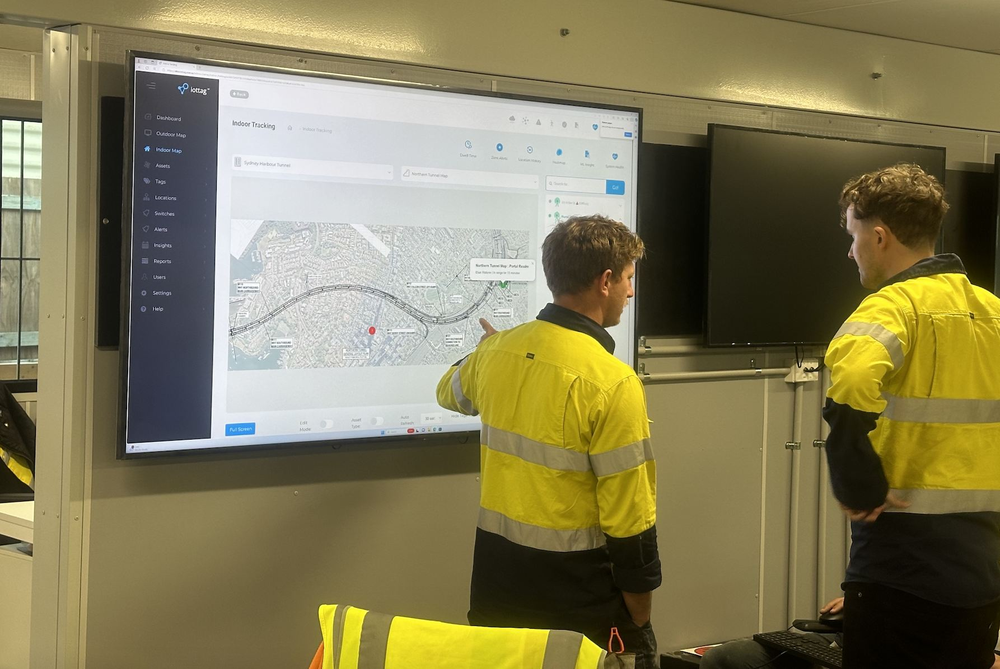

Positioning Technologies
Choosing the right technology
Operational visibility begins with understanding where people, vehicles and assets are located. The challenge is that no single positioning technology is suitable for every environment.
Each presents different operational requirements. iottag combines multiple positioning technologies to deliver the visibility, accuracy and reliability required across complex operational environments.
Fit For Purpose
Technology To Suit
The Environment
Every operational environment presents different challenges. Selecting the right technology is critical to achieving reliable operational visibility
Iottag engineering team evaluates operational requirements and designs the most appropriate solution

Coverage

Accuracy

Infrastructure requirements

Environmental conditions

Operational objectives
Hybrid Positioning Intelligence
Many operations require multiple positioning technologies working together,
to gain necessary accuracy and uninterrupted visibility for unparalleled safety and operational efficiency.
The platform is designed to support hybrid positioning environments where multiple technologies contribute to a shared operational understanding.
Underground
Surface
Accuracy Is Only Part Of The Requirement
Many positioning projects focus solely on accuracy.
Operational outcomes depend on far more. The right positioning technology balances all of these requirements.
Coverage
Reliability
Battery life
Scalability
Maintainability
Operational integration
Lifecycle costs
Positioning Technologies As Part Of Operational Intelligence
Location information alone does not create value.
Value is created when location information is combined with:

Workforce activity

Fleet movement

Environmental conditions

Operational events

Production systems

Safety controls
This creates the operational context required to support Operational Intelligence.

Engineered for the environment
Every operational environment is different.
Discover how iottag selects and combines positioning technologies to deliver reliable operational visibility.